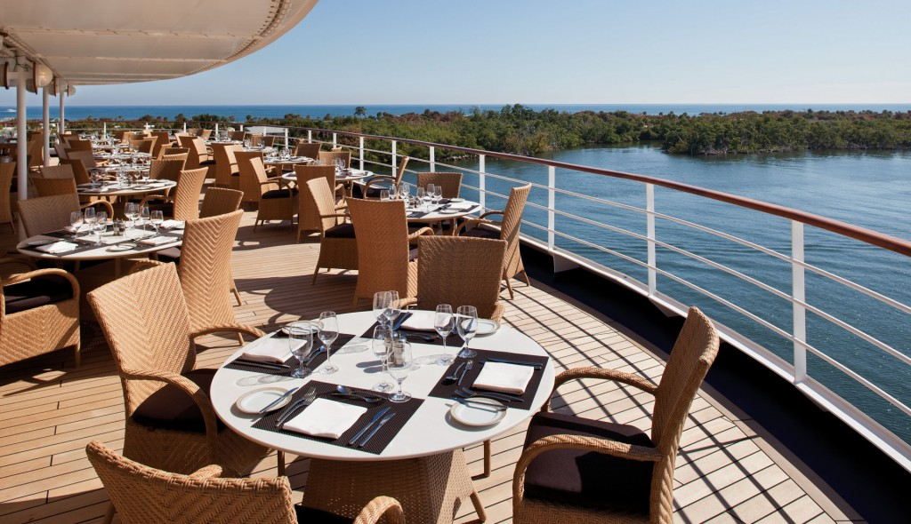

MIAMI and WESTERN CARIBBEAN CRUISE AND STAY
Sailing onboard Celebrity Reflection
This ship has a host of innovative features and a modern feel that will culminate in a cruise holiday that you will never forget. You can avail of the world-class treatments at the Spa; try the Elemis Aroma Spa Seaweed Wrap with Full Body Massage for a truly relaxing experience. Or why not retire to Le Champagne with a small group of friends. At the welcoming Pool Bar you can watch as the chefs grill your meat and seafood at the specially designed tableside grills or take the reins and do the grilling yourself with their expert advice to guide you. Head to La Terraza for some classic French dishes, fine wine and artisan cheeses or try The Bar for some light snacks and refreshments throughout the day.
LaTerrazza

LeChampagne

Panorama Lounge

LaTerrazza
ShowLounge

Library

Day 1 - Miami, Florida
The beauty of South Beach's art deco architecture and sparkling beaches are set against a rich backdrop provided by the flavour of the Latin community.
Day 2 - At Sea
Day 3 - Cozumel, Mexico
Cozumel's coral reefs make it an underwater sanctuary for hundreds of exotic fish species, while the lush vegetation inland makes it a haven for a range of tropical bird species.
Day 4 - George Town, Grand Cayman
Stingray City, named as one of the most rewarding experiences in the undersea world by National Geographic, allows swimmers to mingle with stingrays.
Day 5 - Montego Bay, Jamaica
Jamaica's second-largest municipality is home to open-air markets, resorts and an eclectic mix of Jamaican personalities. It's noisy, charming and a good place to immerse yourself in local culture.
Day 6 - At Sea
Day 7 - Cococay, Bahamas
Right in the heart of the Caribbean Sea, CocoCay is secluded and subdued. Tepid waters as clear as glass make this an ideal location to take advantage of all the aquatic recreational opportunities available.
Day 8 - Miami, Florida
Hotel Stay Fontainebleau Miami Beach
Includes: Return Flights from Dublin, 3 Night Room Only Stay at The Fontainebleau Miami Beach, 7 Night Full Board Cruise onboard Celebrity Reflection
Prices from EURO 1965pp
Departure Dates and Sailings - 7 Night Eastern and Western Caribbean departing Selected dates between Jan - Dec 2016